M11 EC - Encontro 3
Prof. Nicola
Bem-vindos!
Programa
AI for Business
Wifi
Inteli - Visitantes
01
Como a IA
chegou aqui
Máquinas podem pensar?
Alan Turing, 1950
VOL. LIX. No. 236.][October, 1950
MIND
A QUARTERLY REVIEW OF PSYCHOLOGY AND PHILOSOPHY
I.—COMPUTING MACHINERY AND INTELLIGENCE
By A. M. Turing
1. The Imitation Game. I propose to consider the question, ‘Can machines think?’ This should begin with definitions of the meaning of the terms ‘machine’ and ‘think’. The definitions might be framed so as to reflect so far as possible the normal use of the words, but this attitude is dangerous…
1950
Alan Turing

Termo
Token
O pedaço de texto que o modelo lê de cada vez.
1958 · Rosenblatt
A máquina aprende com exemplos
Ninguém escreve as regras.
Perceptron
#Dia 03/10
Responda nossa
pesquisa
⟶Leia o QR Code ao lado e
nos dê a sua opinião.